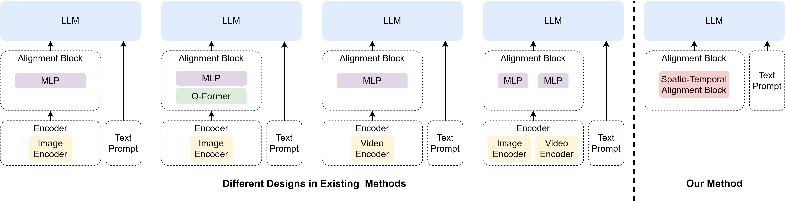
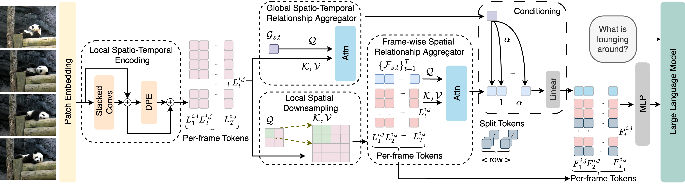
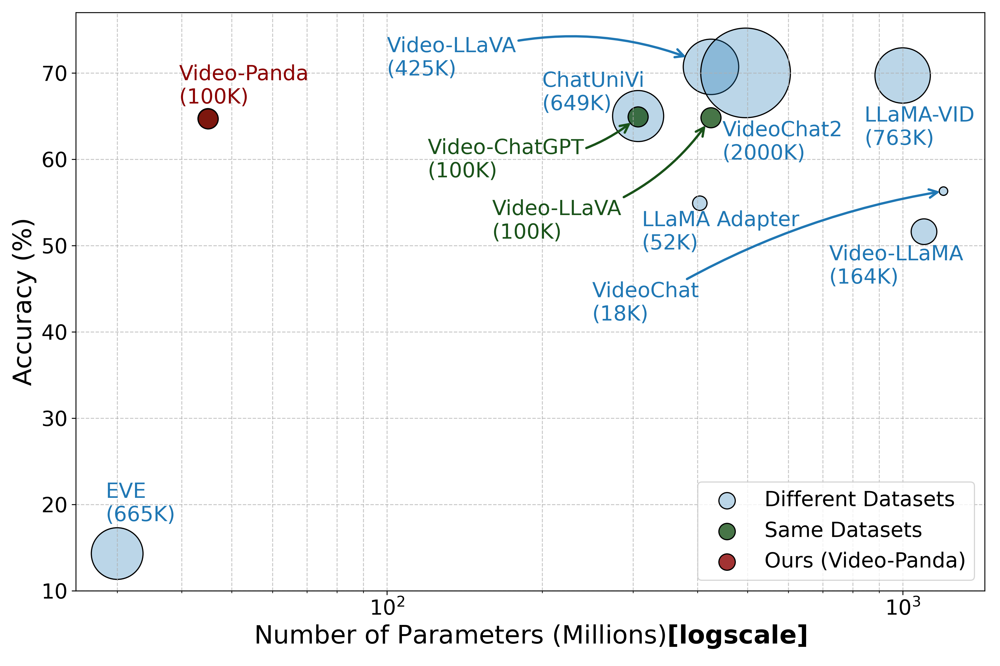

Comparison to existing video-language model architectures.

Detailed architecture of our Spatio-Temporal Alignment Block (STAB).

Model performance on MSVD-QA versus the model size of the visual component in logarithmic scale. The bubble size indicates the amount of finetuning data (in thousands). Models using the same training dataset as ours (100K samples) are shown in dark green, while those using different datasets are in blue.